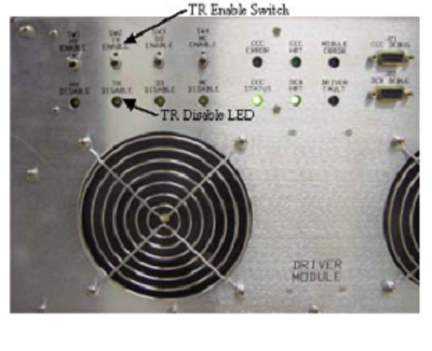
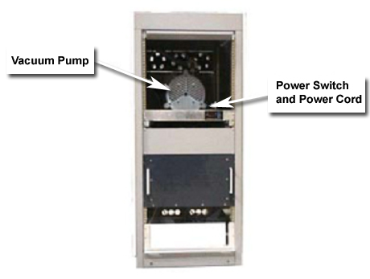
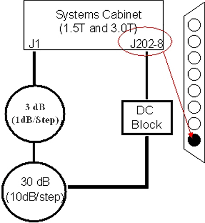
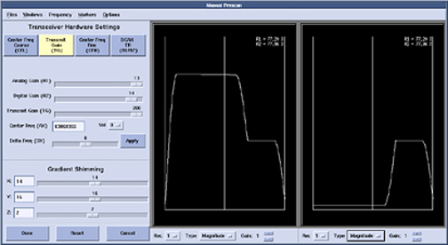
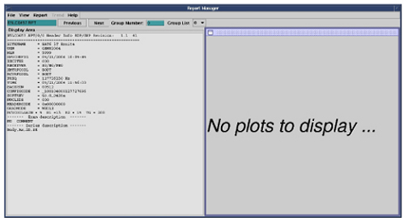
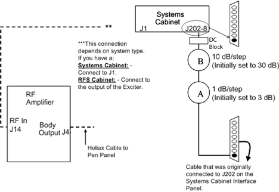
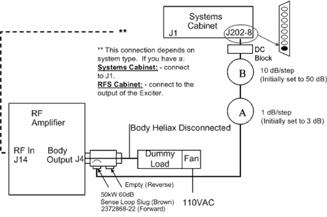
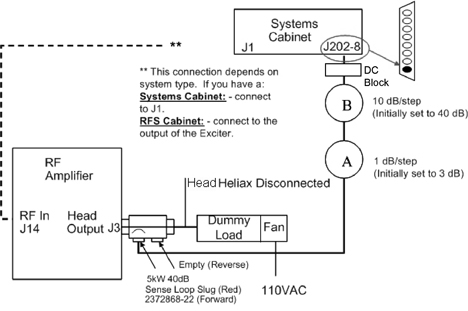

Proprietary to General Electric Company
Direction 5440000, Rev# 5
Signa HDxt Service Methods
Module Version 5.0, Version Date 10/30/08
Proprietary to General Electric Company |
| Required Persons | Preliminary Reqs | Procedure | Finalization |
|---|---|---|---|
| 1 | Not Applicable | 60 mins | 10 mins |
The RF Test (RFT) is a RF loopback test that evaluates the stability, magnitude and phase linearity, droop, pulse fidelity, and bandwidth of the RF transmit chain in a Signa system.
The RF receive line is not verified in this procedure.
It is recommended to run the RFT tests in the following order:
TPS Loopback Baseline Data - TPS Loopback Baseline Data
Body Sense Loop - Body Sense Loop
Head Sense Loop - Head Sense Loop
Body Dummy Load (High Power) - Body Dummy Load (High Power)
Head Dummy Load Baseline Control Variables - Head Dummy Load Baseline Control Variables
Other RF Troubleshooting Other RF Troubleshooting
| Item | Qty | Effectivity | Part# | Manufacturer | |
|---|---|---|---|---|---|
| 3.0T Universal SST Kit | 1 | - | 5110731 or 46-320383G1 plus 5110731-2 | - | |
| 3.0T RF Power Measurement Kit | 1 | - | 2354143 | - | |
| 3.0T Grafidy Kit or Variable 0 to 70 dB, 10 dB steps | 1 | - | 2386042 | - | |
| Service Diagnostic Kit (shipped inside RFS Cabinet) | 1 | - | 5160683 | - | |
| 12 inch Adjustable Wrench | 1 | - | - | - | |
| Condition | Reference | Effectivity |
|---|---|---|
Disable UTNS3, Disable TR Error Reporting (Driver Module). Systems with TRM and TwinSpeed Accessories Cabinet (TAC): Disable Vacuum Pump (Quiet Technology). | - | - |
Disable the UTNS by removing the UTNS Antenna from the rear of the UTNS 3 at J31.
Disable the TR error condition in the Driver Module.
Verify the system is in “Idle” and all coils have been removed from the bore.
Remove the front cover of the Excite Systems Cabinet.
On the front of the Driver Module, disable the TR error reporting by setting the TR Switch to the Disable position. (See Illustration 1.)
Illustration 1: Driver Module Switch

Systems with TRM: Shut down the vacuum pump (disable Quiet Technology).
Remove the front cover of the TwinSpeed Accessories Cabinet (TAC) , and place the power switch on the right side of the vacuum pump (near the power cord connection) in the OFF position, or remove the power cord from the pump. (See Illustration 2.)
Illustration 2: Vacuum Pump in TwinSpeed Accessories Cabinet

Make sure the vacuum pump is powered OFF and not running.
Remove the chain from around the vacuum line at J11 at the rear of the TAC, and slowly open the vacuum line connection at J11.
Allow the vacuum to slowly equalize the vacuum space inside the magnet bore to atmospheric pressure.
| NOTE: | Running the RFT test with the magnet bore vacuum space below atmospheric pressure will result in magnitude and phase stability plots that exhibit a sloping, sometimes sawtooth pattern. |
Essentially, the TPC Loopback Baseline Data test is a “transmit/receive electronics loopback” for the transmit and receive chain components in the MGD Chassis only. It verifies the proper function of the Exciter and Receiver. The TPS test is performed in the “Body” mode. Results from this test are referenced automatically by subsequent RFT tests. Therefore, this test must be performed first. Control Variables for stability and linearity troubleshooting are listed in Table 3.
| ||||
| EQUIPMENT DAMAGE! The 30 dB and DC Block Attenuators MUST be connected BEFORE connecting the sense loop to prevent damage to the TPS Receiver Board. | ||||
| ||||
| EQUIPMENT DAMAGE POSSIBILITY! The attenuators may contain ferrous parts. Do not take them into the magnet room; doing so can cause damage to these components. | ||||
| ||||
| EQUIPMENT DAMAGE! All phantoms and coils should be removed from the bore. | ||||
Disable UPM by entering p in the first line of the MGD stage file in the Stage and Custom Configurations document. This document may also be referred to if more information is required.
Disconnect the BNC Cables J1 and J202 at the rear bulkhead of the Systems Cabinet.
Set up the system for the TPS Loopback test. The Canon to BNC Cables and DC Block can be found in the Service Diagnostic Kit shipped inside the RFS Cabinet of every system. (See Illustration 3.)
Illustration 3: TPS Loopback Setup

Setup Scan:
Select [New Pt].
ID: Type geservice and press [Enter].
Name: Type RFT and press [Enter].
Weight (Lbs): Type 300 and press [Enter].
Set Patient Protocols to Service.
At the front of the enclosure, position the alignment lights in the head area of the cradle; press<Landmark>, then <Move to Scan>.
Select [Other] from the Service menu, and then locate the RF Test protocol Body series in the list.
In the Additional Parameters field [User CVs Screen], enter the values listed in Table 1.
Table 1: Control Variables (CVs) Values
| Parameter | CV Name | Required Value | Action |
|---|---|---|---|
| CV 0 | EFB Bypass Value | 1 | [Enter] |
| CV 1 | RF Amp Mode | 0 | [Enter] |
| CV 2 | Sense Loop | 0 | [Enter] |
| CV 3 | Stab/No Grad | 1 | [Enter] |
| CV 4 | Linearity | 1 | [Enter] |
| CV 5 | Stab/Grad | 4 | [Enter] |
| CV 6 | Bandwidth | 0 | [Enter] |
| CV 7 | BW Cal | 0 | [Enter] |
Click [Accept].
Click [Save Series] and (if available) [Download].
Right mouse click on [Research Options] and select [Setup Params].
Enter the values listed in Table 2.
Table 2: TPS Loopback Table of Setup Parameters
| Parameter Name | Required Field | Action |
|---|---|---|
| R1 | 13 | |
| R2 | 15 | |
| TG | 50 | |
| Number of Frames | 4 | [Enter] |
| Window 1: Frame | 1 | [Enter] |
| Window 1: Frame | 0 | [Enter] |
| Window 1: +/- | + | [Enter] |
| Window 2: Frame | 2 | [Enter] |
| Window 2: Frame | 0 | [Enter] |
| Window 2: +/- | + |
Click [Done].
Right mouse click on [Research Options] then [Download].
Click [Manual Prescan].
From the “Windows” menu bar in the Manual Prescan window, select [Two Windows]. Both windows should be set as follows:
Plot Type = Magnitude
Plot Gain = 1
There are four frames of rectangular pulses. Two of these pulses will be viewed, one in each window. Illustration 4 shows an example of the pulses. Be aware that these pulses may look different depending on the attenuation method used.
Illustration 4: TPS Loopback Manual Prescan Display (EXAMPLE)

| NOTE: | The basic signal shown in Illustration 4 will be displayed during any of the following tests while in Prescan. |
Increase the TG towards a final value of 200. Adjust the rotary attenuator, if necessary, until an R2 value between 40% and 90% (nominally 85%) is achieved.
Click [Done].
Click [Scan]. Scan time should range between 5 and 6 minutes.
When the scan completes, analysis is automatically run. Press <Enter>to quit.
View results by using the Report Manager tool from the Service Desktop Manager. (See Illustration 5.)
Illustration 5: Report Manager Main Page

To access the Report Manager:
Click [Utilities].
Click [Report Manager]. Password is mrgo1.
Click [Start].
Select File, then Open.
Select file type RFT.
Select Most Recent File at the top of the list.
Record data for each test in the Data Sheet.
| NOTE: | Low and High Power tests show the same results; the test is done twice. |
| NOTE: | Because the DC Block is being used, the plots displayed in RFT Report Manager will show a drastic drop. Only the data to the left of that drop is valid. |
Select File, Quit and [Yes] to exit the tool.
If not proceeding to the next subsection, go to Step .
Refer to the Control Variables for stability and linearity troubleshooting in Table 3.
Table 3: TPS Loopback Control Variables
| User CV Name | Baseline | Stability T/S | Linearity T/S |
|---|---|---|---|
| EFB Bypass | 1 | 1 | 1 |
| RF Amp Mode | 0 | 0 | 0 |
| Sense Loop | 0 | 0 | 0 |
| Stab/No Grad | 1 | 1 | 1 |
| Linearity | 1 | 0 | 1 |
| Stab/Grad | 4 | 4 | 0 |
| Bandwidth | 0 | 0 | 1 |
| BW Cal | 0 | 0 | 0 |
The Body Sense Loop test evaluates the health of the Body Transmit chain and the RF Field in the bore. If this test passes, the Body Transmit chain is good. (The TPS Loopback Baseline test is performed first.)
Prepare the system following the steps in Step
Disable the RF Out at the front of the FP I/O Board in the Systems Cabinet.
Set up the system for the Body Sense Loop test. (See Illustration 6 for equipment room setup.) The Canon to BNC Cables and DC Block can be found in the Service Diagnostic Kit shipped inside the RFS Cabinet of every system.
Illustration 7 provides the magnet room setup. Use the SPT Body Loader and Phantom. The Sense Loop and bracket are found in the SST Kit.
| NOTE: | The Sense Loop in the 1.5T SST Kit can be used on the 3.0T system if a Sense Loop is not available in the 3.0T Kit. |
Illustration 6: Equipment Room Body Sense Loop Setup

Illustration 7: Magnet Room Setup for Body Sense Loopback Test

Enable RF Out at the FP I/O board in the Systems Cabinet.
Set up scan:
Select [New Pt].
ID: Type geservice and press <Enter>.
Name: Type RFT and press <Enter>.
Weight (Lbs): Type 300 and press <Enter>.
Set Patient Protocols to Service.
At the front of the enclosure, position the alignment lights on the SPT Body Loader; press <Landmark>, then <Move to Scan>.
Select [Other] from the Service menu, then locate the RF Test protocol Body series in the list.
In the Additional Parameters field [User CVs Screen], enter the values as listed in Table 4.
Table 4: Body Sense Loop Baseline User CV Values
| Parameter | CV Name | Required Value | Action |
|---|---|---|---|
| CV0 | EFB Bypass | 1 | <Enter> |
| CV1 | RF Amp Mode | 4 | <Enter> |
| CV2 | Sense Loop | 1 | <Enter> |
| CV3 | Stab/No Grad | 1 | <Enter> |
| CV4 | Linearity | 1 | <Enter> |
| CV5 | Stab/Grad | 4 | <Enter> |
| CV6 | Bandwidth | 1 | <Enter> |
| CV7 | BW Cal | 0 | <Enter> |
Click [Accept].
Click [Save Series] and (if available) [Download].
Right mouse click on [Research Options] and select [Setup Params]. Enter values as listed in Table 5.
Table 5: Body Sense Loop Baseline Table of Setup/Parameters
| Parameter Name | Required Field | Action |
|---|---|---|
| R1 | 13 | |
| R2 | 15 | |
| TG | 50 | |
| Number of Frames | 4 | [Enter] |
| Window 1: Frame | 1 | [Enter] |
| Window 1: Frame | 0 | [Enter] |
| Window 1: +/- | + | [Enter] |
| Window 2: Frame | 2 | [Enter] |
| Window 2: Frame | 0 | [Enter] |
| Window 2: +/- | + |
Click [Done].
Right mouse click on [Research Options] then [Download].
Click [Manual Prescan].
From the “Windows” Menu bar in the Manual Prescan window, select [Two Windows]. Both windows should be set as follows:
Plot Type = Magnitude
Plot Gain = 1
Slowly advance TG from 50 to 200 while adjusting variable attenuators to prevent R1 and R2 over-range. Do NOT adjust R1 or R2.
With TG at 200, make final adjustments to variable attenuators for R2 signal between 75% and 85%. Do NOT adjust R1 or R2.
d. Click [Done].
Click [Scan].
When scan completes, an analysis is automatically run. Press <Enter> to quit.
View results by using the Report Manager tool from the Service Desktop Manager. See Illustration 5. To access the Report Manager perform the following steps:
Click [Utilities]
Click [Report Manager]. Password is mrgo1.
Click [Start].
Select File then Open.
Select file type RFT.
Select Most Recent File (at the top of the list).
Record data for each test in the Data Sheet.
Select File, Quit then [Yes] to exit the tool.
| NOTE: | If the magnitude and phase stability plots exhibit a sloping or sawtooth signature and the vacuum area around the magnet bore is at atmospheric pressure (TRM), this may indicate that the AC line frequency is not exactly 50 or 60 Hz. Repeat Step 5 through Step 12, changing CV Name gating to 1 (Line). This should remove any error contribution from the AC Line, and is only necessary during the Body Sense Loop test. |
If not proceeding to the next subsection, go to Step .
Control Variables for stability and linearity troubleshooting are listed in Table 6.
Table 6: Body Sense Loop Control Variables
| User CV Name | Baseline | Stability T/S | Linearity T/S |
| EFB Bypass | 1 | 1 | 1 |
| RF Amp Mode | 4 | 4 | 4 |
| Sense Loop | 1 | 1 | 1 |
| Stab/No Grad | 1 | 1 | 0 |
| Linearity | 1 | 0 | 1 |
| Stab/Grad | 4 | 4 | 0 |
| Bandwidth | 1 | 0 | 1 |
| BW Cal | 0 | 0 | 0 |
This test evaluates the health of the Head Transmit chain and the RF field in the bore. If this test passes, the Head Transmit chain is good. TPS Loopback Baseline Data Test is performed first. Control Variables for stability and linearity troubleshooting are listed in Table 9.
Prepare the system per the steps in Step .
Disable the RF Out at the front of the FP I/O board in the Systems Cabinet.
Set up the system for the Head Sense Loop test. Refer toIllustration 8 for equipment room setup. Canon to BNC cables and DC Block can be found in the Service Diagnostic Kit shipped inside the RFS Cabinet of every system.
Illustration 9 provides the magnet room setup diagram. The Sense loop and bracket are found in the SST kit.
| NOTE: | The Sense loop in the 1.5T SST kit can be used on the 3.0T system, if a Sense Loop is not available in the 3.0T Kit. |
| NOTE: | Illustration 9 shows the old head coil. Setup is the same for the new Split Top head coil. |
Illustration 8: Equipment Room Head Sense Loop Setup

Illustration 9: Magnet Room Setup for Head Sense Loopback Test
Enable RF Out at the FP I/O board in the Systems Cabinet.
Setup Scan:
Select [New Pt].
ID: geservice<Enter>.
Name: RFT<Enter>.
Weight (Lbs): 300<Enter>.
Set Patient Protocols to Service.
At the front of the enclosure, position the alignment lights on the head coil; press <Landmark>, then <Move to Scan>.
Select [Other] from the Service menu, and locate the RF Test protocol Head series in the list.
In the Additional Parameters field [User CVs Screen], enter the values as listed in Table 7.
Table 7: Head Sense Loop Baseline User CV Values
| Parameter | CV Name | Required Value | Action |
|---|---|---|---|
| CV0 | EFB Bypass | 1 | <Enter> |
| CV1 | RF Amp Mode | 2 | <Enter> |
| CV2 | Sense Loop | 1 | <Enter> |
| CV3 | Stab/No Grad | 1 | <Enter> |
| CV4 | Linearity | 1 | <Enter> |
| CV5 | Stab/Grad | 4 | <Enter> |
| CV6 | Bandwidth | 0 | <Enter> |
| CV7 | BW Cal | 0 | <Enter> |
Click [Accept].
Click [Save Series] and (if available) [Download].
Right mouse click on [Research Options] and select [Setup Params]. Enter values as listed in Table 8.
Table 8: Head Sense Loop Baseline Table of Setup Parameters
| Parameter Name | Required Field | Action |
|---|---|---|
| R1 | 13 | |
| R2 | 15 | |
| TG | 50 | |
| Number of Frames | 4 | <Enter> |
| Window 1: Frame | 1 | <Enter> |
| Window 1: Frame | 0 | <Enter> |
| Window 1: +/- | + | <Enter> |
| Window 2: Frame | 2 | <Enter> |
| Window 2: Frame | 0 | <Enter> |
| Window 2: +/- | + |
Click [Done].
Right mouse click on [Research Options] then [Download].
Click [Manual Prescan].
From the “Windows” Menu bar in the Manual Prescan window, select [Two Windows]. Both windows should be set as follows:
Plot Type = Magnitude.
Plot Gain = 1.
Slowly advance TG from 50 to 200 while adjusting variable attenuators to prevent R1 and R2 over-range. Do NOT adjust R1 or R2.
With TG at 200, make final adjustments to variable attenuators for R2 signal between 75% and 85%. Do NOT adjust R1 or R2.
Click [Done].
Click [Scan].
When scan completes, an analysis is automatically run. Select <Enter> to quit.
View results by using the Report Manager tool from the Service Desktop Manager. See Illustration 5. To access the Report Manager perform the following steps:
Click [Utilities].
Click [Report Manager]. Password is mrgo1.
Click [Start].
Select File then Open.
Select file type RFT.
Select Most Recent File (at the top of the list).
Record data for each test in the Data Sheet.
Select File, Quit, and then [Yes] to exit the tool.
If not proceeding to the next subsection, go to Step .
Control Variables for stability and linearity troubleshooting are listed in Table 9.
Table 9: Head Sense Loop Control Variables
| User CV Name | Baseline | Stability T/S | Linearity T/S |
|---|---|---|---|
| EFB Bypass | 1 | 1 | 1 |
| RF Amp Mode | 2 | 2 | 2 |
| Sense Loop | 1 | 1 | 1 |
| Stab/No Grad | 1 | 1 | 0 |
| Linearity | 1 | 0 | 1 |
| Stab/Grad | 4 | 4 | 0 |
| Bandwidth | 0 | 0 | 0 |
| BW Cal | 0 | 0 | 0 |
This test evaluates the Body Transmit chain up to the Body RF Out at the RF Cabinet with the RF Power Amplifiers RFI Output loaded by a 50 ohm Dummy Load. Control Variables for stability and linearity troubleshooting are listed in Table 12.
Prepare the system per the steps in Step
Disable the RF Out at the front of the FP I/O board in the Systems Cabinet.
Set up the system for the Body Dummy Load test. See Illustration 10 for 3.0T. Canon to BNC cables and DC Block can be found in the Service Diagnostic Kit shipped inside the RFS Cabinet of every system.
Illustration 10: 3.0T Body Dummy Load High Power Loopback Setup

Enable RF Out at the FP I/O board in the Systems Cabinet.
Setup Scan:
Select [New Pt].
ID: Type geservice and press <Enter>.
Name: Type RFT and press <Enter>.
Weight (Lbs): Type 300 and press <Enter>.
Set Patient Protocols to Service.
At the front of the enclosure, position the alignment lights in the head area of the cradle; press <Landmark>, then <Move to Scan>.
Select [Other] from the Service menu, then locate the RF Test protocol Body series in the list.
In the Additional Parameters field [User CVs Screen], enter the values as listed in Table 10.
Table 10: Body Dummy Load Baseline User CV Values
| Parameter | CV Name | Required Value | Action |
|---|---|---|---|
| CV0 | EFB Bypass | 1 | <Enter> |
| CV1 | RF Amp Mode | 4 | <Enter> |
| CV2 | Sense Loop | 0 | <Enter> |
| CV3 | Stab/No Grad | 1 | <Enter> |
| CV4 | Linearity | 1 | <Enter> |
| CV5 | Stab/Grad | 4 | <Enter> |
| CV6 | Bandwidth | 0 | <Enter> |
| CV7 | BW Cal | 0 | <Enter> |
Click [Accept].
Click [Save Series] and (if available) [Download].
Right mouse click on [Research Options] and select [Setup Params]. Enter values as listed in Table 11.
Table 11: Body Dummy Load Baseline Table of Setup Parameters
| Parameter Name | Required Field | Action |
|---|---|---|
| R1 | 13 | |
| R2 | 15 | |
| TG | 50 | |
| Number of Frames | 4 | <Enter> |
| Window 1: Frame | 1 | <Enter> |
| Window 1: Frame | 0 | <Enter> |
| Window 1: +/- | + | <Enter> |
| Window 2: Frame | 2 | <Enter> |
| Window 2: Frame | 0 | <Enter> |
| Window 2: +/- | + |
Click [Done].
Right mouse click on [Research Options] then [Download].
Click [Manual Prescan].
From the “Windows” Menu bar in the Manual Prescan window, select [Two Windows]. Both windows should be set as follows:
Plot Type = Magnitude.
Plot Gain = 1.
Slowly advance TG from 50 to 200 while adjusting variable attenuators to prevent R1 and R2 over-range. Do NOT adjust R1 or R2.
With TG at 200, make final adjustments to variable attenuators for R2 signal between 75% and 85%. Do NOT adjust R1 or R2.
Click [Done].
Click [Scan].
When scan completes, an analysis is automatically run. Select <Enter> to quit.
View results by using the Report Manager tool from the Service Desktop Manager. See Illustration 5. To access the Report Manager perform the following steps:
Click [Utilities].
Click [Report Manager]. Password is mrgo1.
Click [Start].
Select File then Open.
Select file type RFT.
Select Most Recent File (at the top of the list).
Record data for each test in the Data Sheet.
Select File, Quit, and then [Yes] to exit the tool.
If not proceeding to the next subsection, go to Step .
Control Variables for stability and linearity troubleshooting are listed in Table 12.
Table 12: Body Dummy Load Baseline Control Variables
| User CV Name | Baseline | Stability T/S | Linearity T/S |
|---|---|---|---|
| EFB Bypass | 1 | 1 | 1 |
| RF Amp Mode | 4 | 4 | 4 |
| Sense Loop | 0 | 0 | 0 |
| Stab/No Grad | 1 | 1 | 0 |
| Linearity | 1 | 0 | 1 |
| Stab/Grad | 4 | 4 | 0 |
| Bandwidth | 0 | 0 | 0 |
| BW Cal | 0 | 0 | 0 |
This test evaluates the Head Transmit chain up to the Head RF Out at the rear of the RFS/Systems Cabinet with the RF amplifier loaded by a 50 ohm Dummy Load. Control Variables for stability and linearity troubleshooting are listed in Table 15.
Prepare the system per the steps in Step
Disable the RF Out at the front of the FP I/O board in the Systems Cabinet.
Set up the system for the Head Dummy Load test. See Illustration 11 for 3.0T. Canon to BNC cables and DC Block can be found in the Service Diagnostic Kit shipped inside the RFS Cabinet of every system.
Illustration 11: 3.0T Head Dummy Load Loopback Setup

Enable RF Out at the FP I/O board in the Systems Cabinet.
Setup Scan:
Select [New Pt].
ID: geservice<Enter>.
Name: RFT<Enter>.
Weight (Lbs): 300<Enter>.
Set Patient Protocols to [Service].
At front of enclosure, position alignment lights in the head area of the cradle. Press <Landmark> then <Move to Scan>.
Select [Other] from the Service menu, then locate the RF Test protocol Head series in the list.
In the Additional Parameters field [User CVs Screen], enter the values as indicated in Table 13.
Table 13: Head Dummy Load Baseline User CV Values
| Parameter | CV Name | Required Value | Action |
|---|---|---|---|
| CV0 | EFB Bypass | 1 | <Enter> |
| CV1 | RF Amp Mode | 2 | <Enter> |
| CV2 | Sense Loop | 0 | <Enter> |
| CV3 | Stab/No Grad | 1 | <Enter> |
| CV4 | Linearity | 1 | <Enter> |
| CV5 | Stab/Grad | 4 | <Enter> |
| CV6 | Bandwidth | 0 | <Enter> |
| CV7 | BW Cal | 0 | <Enter> |
Click [Accept].
Click [Save Series] and (if available) [Download].
Right mouse click on [Research Options] and select [Setup Params]. Enter the values listed in Table 14.
Table 14: Head Dummy Load Baseline Table of Setup Parameters
| Parameter Name | Required Field | Action |
|---|---|---|
| R1 | 13 | |
| R2 | 15 | |
| TG | 50 | |
| Number of Frames | 4 | <Enter> |
| Window 1: Frame | 1 | <Enter> |
| Window 1: Frame | 0 | <Enter> |
| Window 1: +/- | + | <Enter> |
| Window 2: Frame | 2 | <Enter> |
| Window 2: Frame | 0 | <Enter> |
| Window 2: +/- | + |
Click [Done].
Right mouse click on [Research Options] then [Download].
Click [Manual Prescan].
From the “Windows” Menu bar in the Manual Prescan window, select [Two Windows]. Both windows should be set as follows:
Plot Type = Magnitude.
Plot Gain = 1.
Slowly advance TG from 50 to 200 while adjusting variable attenuators to prevent R1 and R2 over-range. Do NOT adjust R1 or R2.
With TG at 200, make final adjustments to variable attenuators for R2 signal between 75% and 85%. Do NOT adjust R1 or R2.
Click [Done].
Click [Scan].
When scan completes, an analysis is automatically run. Select <Enter> to quit.
View results by using the Report Manager tool from the Service Desktop Manager. See Illustration 5. To access the Report Manager perform the following steps:
Click [Utilities].
Click [Report Manager]. Password is mrgo1.
Click [Start].
Select File then Open.
Select file type RFT.
Select Most Recent File (at the top of the list).
Record data for each test in the Data Sheet.
Select File, Quit, and then [Yes] to exit the tool.
If not proceeding to the next subsection, go to Step .
Control Variables for stability and linearity troubleshooting are listed in Table 15.
Table 15: Head Dummy Load Baseline Control Variables
| User CV Name | Baseline | Stability T/S | Linearity T/S |
|---|---|---|---|
| EFB Bypass | 1 | 1 | 1 |
| RF Amp Mode | 2 | 2 | 2 |
| Sense Loop | 0 | 0 | 0 |
| Stab/No Grad | 1 | 1 | 0 |
| Linearity | 1 | 0 | 1 |
| Stab/Grad | 4 | 4 | 0 |
| Bandwidth | 0 | 0 | 0 |
| BW Cal | 0 | 0 | 0 |
For additional troubleshooting of the Hybrid Splitter and Body Coil, click on Troubleshooting in the left navigation pane of the Service Methods CD web page for the following tests:
MKS RF Troubleshooting
Dynamic disable TR Driver Module Body Hybrid Troubleshooting
Image Quality Troubleshooting
Image Guided Troubleshooting
Image Analysis
Flowchart: Shading
RF Inhomogeneity
Body Images Shading at 45 Degrees
Body Linear
Refer to Finalization before system turnover.
Upon completion of RFT, the following equipment must be restored to full operation if it was put in the Service mode.
UTNS 3
TR Error Reporting (Driver Module)
Body/Head Heliax (if removed)
Vacuum Pump (Quiet Technology) for TRM systems with a TAC (enabled)
TPS reset (perform when system is back to normal)
Body Receive Cable (reconnect)
Enable the UTNS3 by reconnecting the UTNS Antenna to the rear of the UTNS 3 at J31 or refer to Stopping and Starting UTNS3.
Re-enable TR Error reporting by enabling the TR Switch on the front of the Driver module. (See Illustration 12.)
Illustration 12: TR Switch Location
If the Body or Head Heliax was removed, verify the scanner is in “Idle”, turn off the RF Enable at the Exciter (FP-I/O Board) or disconnect J14 from the back of the RF Amplifier.
Disconnect the RFT hardware and cables from the system.
Connect the original Body Output Cable to the RF Amplifier J4, or connect the original Head Output Cable to RF Amplifier J3.
Re-enable the RF Enable at the Exciter (FP-I/O Board), or reattach the cable to J14 at the back of the RF Amplifier.
If the system has a TRM coil and TAC, enable the vacuum pump (Quiet Technology).
If not already done, remove the front cover from the TwinSpeed Accessories Cabinet (TAC) .
Place the power switch on the right side of the vacuum pump (near where the power cord connects) in the ON position, OR plug the power cord back in. See Illustration 13.
Illustration 13: Vacuum Pump in TwinSpeed Accessories Cabinet
Restore the chain from around the vacuum line at J11 at the back of the TAC.
Reconnect body receive cable to Combiner output port.
Perform a TPS reset.
| NOTE: | If an RFT scan is not run and only RFT prescan is run, it is necessary to perform a TPS reset before attempting to perform clinical or service scans. Failure to do this will result in receiving signal loss and autoprescan error when clinical or service scanning is attempted. |